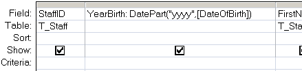

Returns a specified part of a given date.
Syntax
DatePart(interval, date [,firstdayofweek[, firstweekofyear]])
Key
interval The interval of time to return.
date The dates to evaluate (Date).
firstdayofweek A constant (0-7) that specifies the first day of the week.
default=vbSunday (1).
firstweekofyear A constant (0-3) that specifies the first week of the year.
default = the week in which January 1 occurs (1).
| Interval Setting | Description |
| yyyy | Year |
| q | Quarter |
| m | Month |
| y | Day of year |
| d | Day |
| w | Weekday |
| ww | Week |
| h | Hour |
| n | Minute |
| s | Second |
FirstWeekConstants:
0 vbUseSystem - Use the NLS API setting.
1 vbFirstJan1 - Start with week in which January 1 occurs (default).
2 vbFirstFourDays - Start with the first week that has at least four days in the new year.
3 vbFirstFullWeek - Start with first full week of the year.
The firstdayofweek argument will affect calculations that use week intervals.
The DatePart() function can be used in VBA or in an SQL query.
Examples
In a query:

In VBA:
DatePart("d", Now)
DatePart("w", "Feb 12")
To produce a correct ISO 8601 weeknumber requires a function, if this is saved in a module it can be used in VBA or in an SQL query:
Function ISOWeekNum(dtmDate)
' Returns a WeekNumber from a date
Dim NearThurs
NearThurs = ((dtmDate+5) \ 7) * 7 - 2
ISOWeekNum = ((NearThurs - DateSerial(Year(NearThurs), 1, 1)) \ 7) + 1
End function
wscript.echo "ISOWeekNumber: " & ISOWeekNum(cdate("2017-12-25"))
“An essential aspect of creativity is not being afraid to fail” ~ Edwin Land
Related:
Date - Return the current date.
DateAdd - Add a time interval to a date.
DateDiff - Return the time difference between two dates.
Q200299 - BUG: Format or DatePart Functions return wrong Week number for last Monday in year.